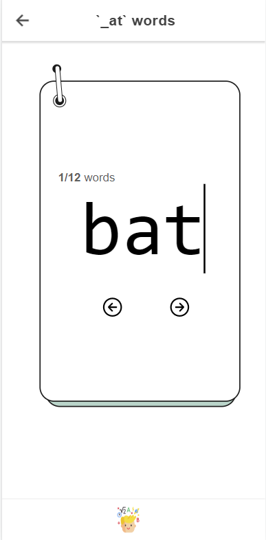
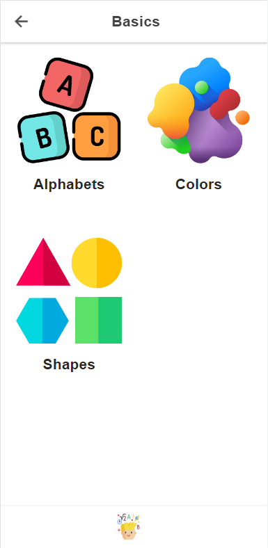
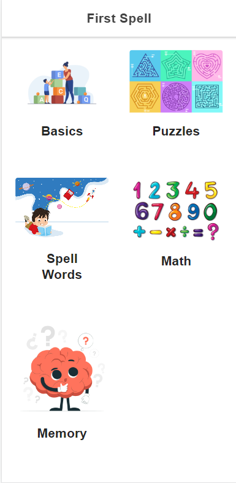

Building Strong Foundations for Lifelong Learning with FirstSpell
The First Spell app has a flash card-based UI design, allowing children to focus on the learning material without being distracted by unnecessary elements. The app covers topics suitable for pre-KG students, and we will continue to add high-quality content periodically to keep the app engaging and up-to-date.
Features
-

CVC words
CVC (consonant-vowel-consonant) words are the building blocks of early reading and writing skills. FirstSpell includes an engaging and interactive CVC words learning feature that introduces children to hundreds of CVC words through fun games and activities. This feature is designed to enhance their phonics skills, vocabulary, and reading fluency in a playful and intuitive way.
-

Basics
FirstSpell offers an interactive and engaging learning experience that introduces young children to the basics of alphabets, shapes, and colors. With our fun and easy-to-use learning modules, children can explore
-

Games: Memory/Puzzles
Improve problem-solving skills and spatial reasoning by navigating through challenging mazes. Enhance memory skills and concentration by matching pairs of colorful cards.